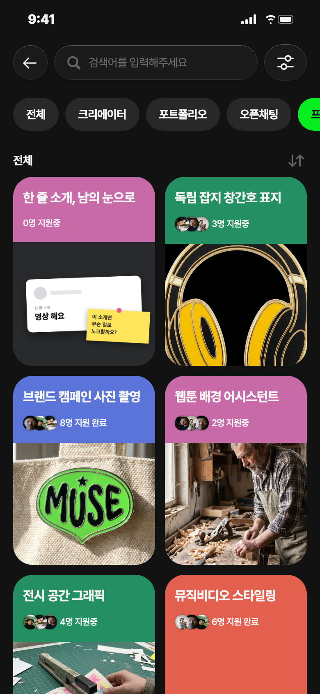
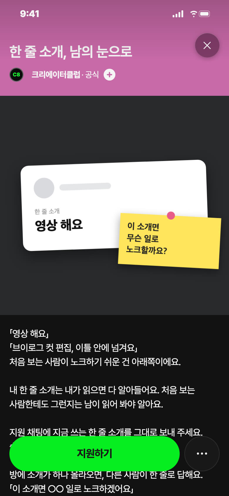
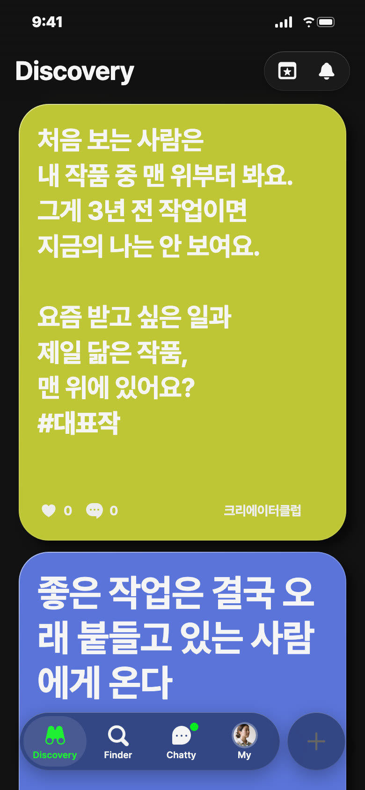
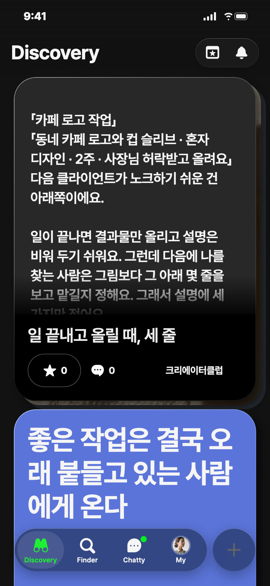
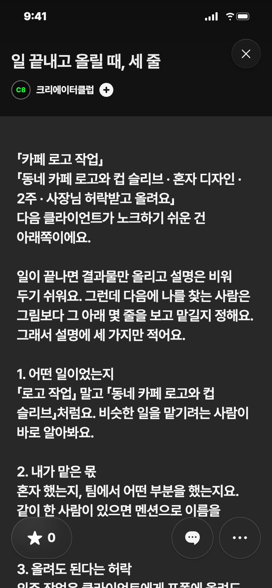

C8 앱 게시 시안 · 11/4(수) — 오늘 추천: 프로젝트 · 낮 12시
오늘 추천 · 프로젝트 · 분홍


칸: 서로 돕기 × 쓸모
왜 오늘: 수요일은 회원끼리 만나는 판 날이에요. 주말 전까지 고쳐 두면 다음 주 노크가 달라져요
보낼 사람: 프로필 만들어 놓고 노크 한 번도 못 받은 친구에게 「너 소개 남이 읽으면 뭐로 보이나 보자」
받고 싶은 지원 채팅: 「지금 소개: 일러스트 그려요. 책 표지 일을 받고 싶은데 그게 안 보이는 것 같아요」
젠지 별점: ★4 — 보낼 이유: 방이 비어 있을 때 첫 지원이 망설여질 수 있어 애매로 뺌
제목
한 줄 소개, 남의 눈으로
카테고리
함께하기 · 프로필
모집 내용
분야 상관없이 20명 · 11/4(수)~11/8(일) · 그룹 채팅방에서 서로의 한 줄 소개를 읽고 「이 소개면 이런 일로 노크하겠어요」 한 줄씩 답하기 · 상품 없음
설명
「영상 해요」 「브이로그 컷 편집, 이틀 안에 넘겨요」 처음 보는 사람이 노크하기 쉬운 건 아래쪽이에요. 내 한 줄 소개는 내가 읽으면 다 알아들어요. 처음 보는 사람한테도 그런지는 남이 읽어 봐야 알아요. 지원 채팅에 지금 쓰는 한 줄 소개를 그대로 보내 주세요. 승인되면 그룹 채팅방에 들어와요. 방에 소개가 하나 올라오면, 다른 사람이 한 줄로 답해요. 「이 소개면 ○○ 일로 노크하겠어요」 내가 받고 싶던 일과 다르게 읽혔다면 거기가 고칠 데예요. 일요일 밤까지 열어 둬요. 상품은 없어요. 고친 소개는 방에 한 번 더 올려 주세요. 고치기 전과 후가 나란히 있으면 뒤에 들어온 사람도 그걸 보고 자기 소개를 고쳐요. 위 예시 두 줄은 C8이 지어낸 거예요.
비축 · 영감 · 다음 일요일 11/8 오후 6시 후보 · 노랑

칸: 일 받기 × 쓸모
왜 비축: 프로필에서 작품 순서를 바꿀 수 있는지 확인 전이에요 — 앱 화면 확인은 나나 몫
보낼 사람: 졸업 작품이 아직 맨 위인 친구에게 「이거 너 얘기야」
받고 싶은 댓글: 「2023년 거 내리고 이번 달 패키지 올렸어요」
영감 글
처음 보는 사람은 내 작품 중 맨 위부터 봐요. 그게 3년 전 작업이면 지금의 나는 안 보여요. 요즘 받고 싶은 일과 제일 닮은 작품, 맨 위에 있어요? #대표작
비축 · 포트폴리오 · 초록


칸: 보여 주기 × 쓸모
왜 비축: 어제 긴 글 「노크 메시지」와 같은 세 줄 틀이라 한 주 띄워요
보낼 사람: 외주 끝내고 결과물만 올려 둔 친구에게 「설명 세 줄만 써」
받고 싶은 댓글: 「팀 작업이라 제 몫을 어떻게 적을지 고민했는데 이렇게 써 볼게요」
제목
일 끝내고 올릴 때, 세 줄
긴 글 본문
「카페 로고 작업」 「동네 카페 로고와 컵 슬리브 · 혼자 디자인 · 2주 · 사장님 허락받고 올려요」 다음 클라이언트가 노크하기 쉬운 건 아래쪽이에요. 일이 끝나면 결과물만 올리고 설명은 비워 두기 쉬워요. 그런데 다음에 나를 찾는 사람은 그림보다 그 아래 몇 줄을 보고 맡길지 정해요. 그래서 설명에 세 가지만 적어요. 1. 어떤 일이었는지 「로고 작업」 말고 「동네 카페 로고와 컵 슬리브」처럼요. 비슷한 일을 맡기려는 사람이 바로 알아봐요. 2. 내가 맡은 몫 혼자 했는지, 팀에서 어떤 부분을 했는지요. 같이 한 사람이 있으면 멘션으로 이름을 걸어요. 3. 올려도 된다는 허락 외주 작업은 클라이언트에게 포폴에 올려도 되는지 먼저 물어요. 허락받았다고 한 줄 적어 두면 보는 사람도 안심해요. 세 줄을 합치면 이렇게 돼요. 「동네 카페 로고와 컵 슬리브를 혼자 디자인했어요. 2주 걸렸고, 사장님 허락받고 올려요.」 여기 예시는 C8이 지어낸 거예요. #포폴설명
설명
「카페 로고 작업」